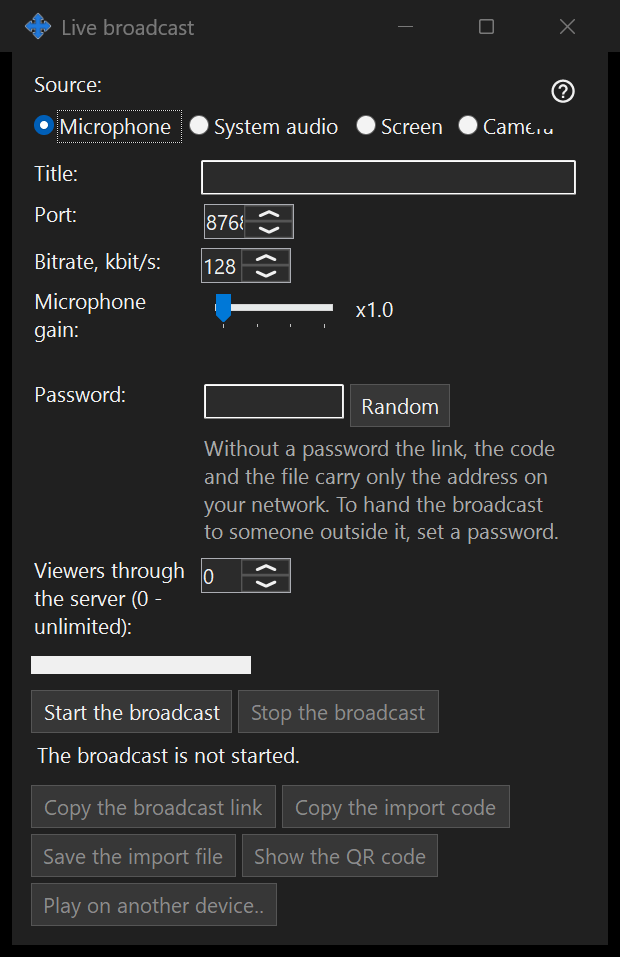

Live broadcast
What this is for
Share a screen, one window, camera, microphone or system audio from Share Manager. Open a live broadcast in the 64-bit viewer using its link, code or .fmsbcast file. Capture starts only when you press Start.


In this order
Choose the source, then the monitor or individual window for screen capture, or the camera and mode. Check the title, listener password, audio and LAN-viewer setting before pressing Start. The selected picture and sound are shared with listeners, including private content visible in that source. Copy a link or save a .fmsbcast file only when on air. Stop ends the session; closing a captured window also ends its broadcast.
The elements
Live broadcast
Choose the source, then the monitor or individual window for screen capture, or the camera and mode. Check the title, listener password, audio and LAN-viewer setting before pressing Start. The selected picture and sound are shared with listeners, including private content visible in that source. Copy a link or save a .fmsbcast file only when on air. Stop ends the session; closing a captured window also ends its broadcast.
Manager settings · SFTP sharing settings · Exchange server settings